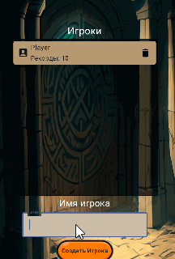
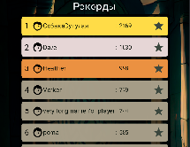

SpiritualAdviser
Ваши достижения сохраняются в карточке игрока.
Вы можете создать столько игроков, сколько нужно, у каждого игрока свой игровой прогресс.

в этом случае показываем подсказку о необходимости указать имя игрока.
Если пользователь не создал игрока при первом запуске, то он создается автоматически.
Список игроков хранится в базе данных Json файлом.
База данных основана на Room, библиотеку libs.gson использую что бы парсить json.
Игрок хранит данные о достижениях, пройденых - открытых уровнях и уникальные настройки уровней приключений.

В таблице рекордов игроки занимают места, чем больше очков достижений, тем выше место в таблице.
Список мест удаленно храним на сервере.
База данных сервера отдает Json файл, который мы разворачиваем и отображаем в игре.
Для общения с сервером использую Retrofit, libs.gson и APIService для SQLite запросов.
Если нет доступа к интернету, просто не показываем таблицу так как это не обязательная часть игры.
При следующем подключении игрок обновит свой прогресс и не потеряет полученые очки в момент отсутствия интернета.